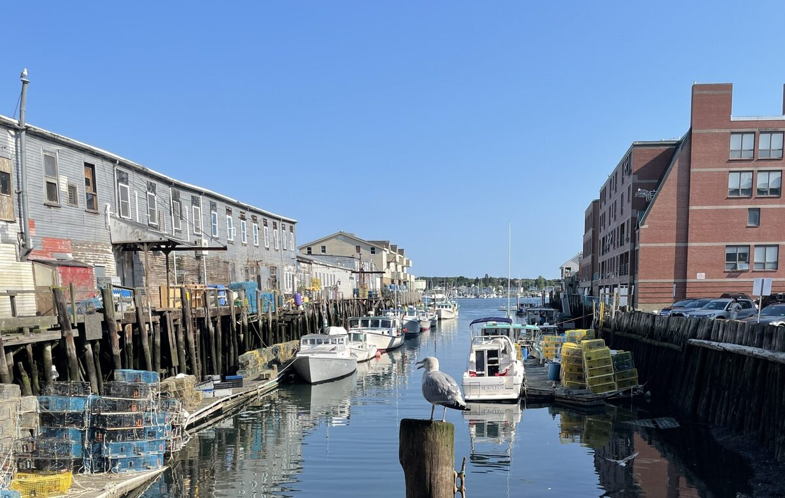
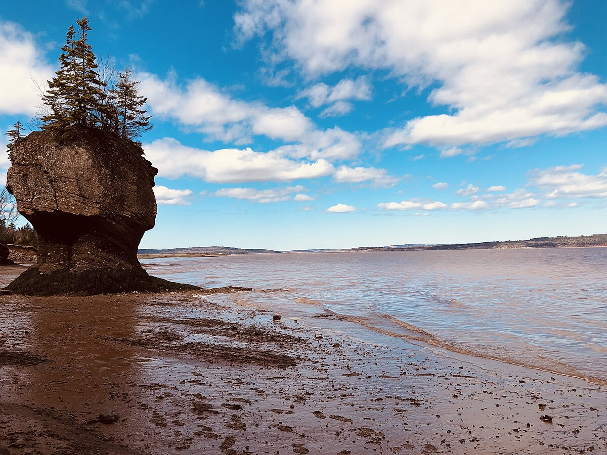
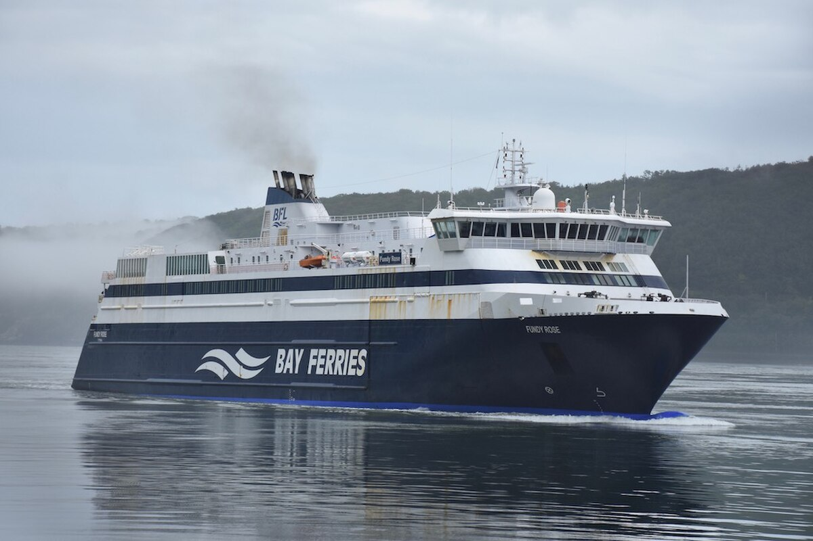
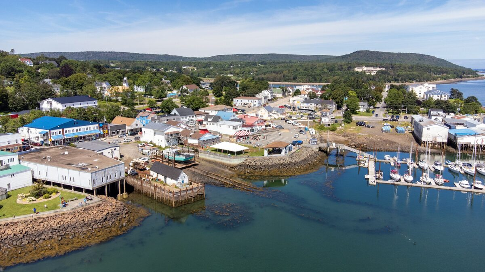
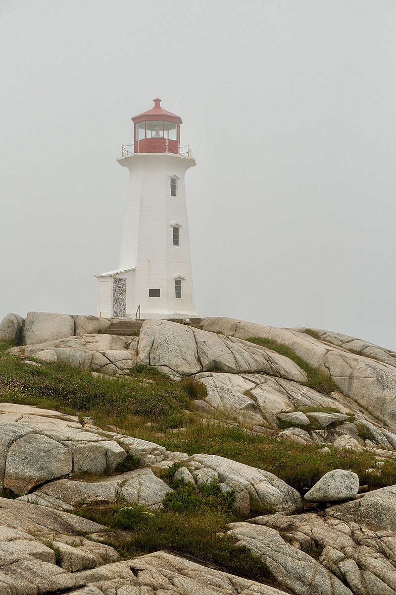
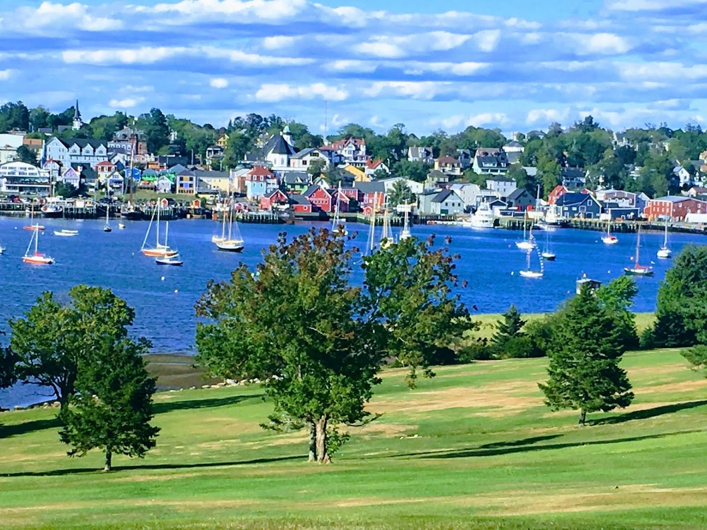
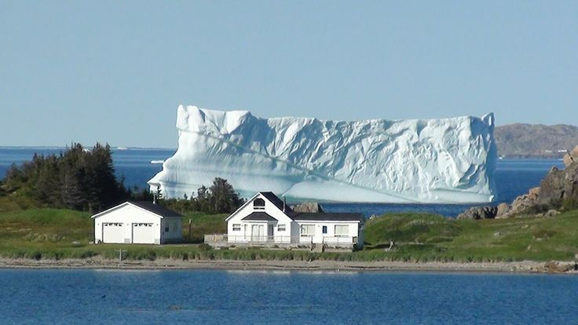
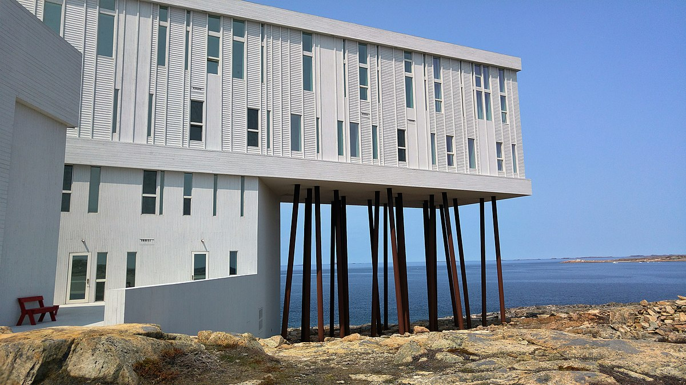
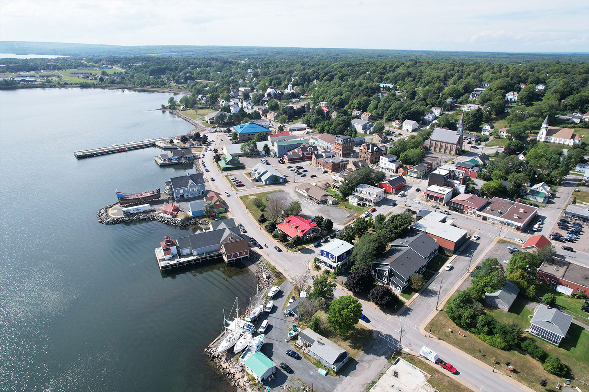

Afternoon
Meet Molly & Bonie
Arrive in Portland and connect with Molly and Bonie. Take a relaxed stroll through the Old Port — cobblestone streets, galleries, and waterfront views.
powered by Alterra, digital
Meet up, unwind, and ease into the trip. Old Port stroll with Molly and Bonie, then an early dinner before the long drive north tomorrow.
Arrive in Portland and connect with Molly and Bonie. Take a relaxed stroll through the Old Port — cobblestone streets, galleries, and waterfront views.
Portland's food scene is outstanding — fresh seafood, farm-to-table, craft breweries. Enjoy a good meal before the road trip begins.
Eventide Oyster Co. — acclaimed oyster bar with creative New England seafood; the brown-butter lobster roll is legendary. Scales — waterfront fine dining on the working wharf with outstanding lobster and local fish. Street & Co. — intimate Old Port institution known for its perfectly grilled seafood. Duckfat — casual favourite for Belgian-style fries and craft panini. Highroller Lobster Co. — creative lobster rolls and laid-back harbour vibes.
Drive north to Saint John, NB, then take the Fundy Rose ferry across the Bay of Fundy to Digby, Nova Scotia.
Approximately 4.5-hour drive north through Maine and into New Brunswick. Cross the border at Calais/St. Stephen. Have passports ready.
Consider a coffee break in Bangor, ME (~2 hours in) — home to the famous 31-foot Paul Bunyan statue. After crossing the border at St. Stephen, NB, stop at New River Beach Provincial Park — a gorgeous stretch of coast with tide pools and picnic grounds. Just 30 minutes from Saint John and a great leg-stretcher.
Board the Fundy Rose for the 2.5-hour crossing of the Bay of Fundy. Arrive Digby at approximately 4:45 PM Atlantic Time. Beautiful views of the bay and coast.
Departs 2:15 PM AT · Arrives ~4:45 PM AT · Check-in at least 1 hour before departure
Digby is famous for its scallops — the world's largest scallop fleet operates from here. Walk the waterfront, take in the harbour.
Fundy Restaurant — the definitive Digby scallop experience; right on the waterfront with harbour views. The Crow's Nest — casual seafood spot overlooking the working harbour; great fish & chips. Captain's Cabin — classic Maritime seafood including clam chowder, lobster rolls, and of course Digby scallops. Churchill's at Digby Pines — upscale dining in a historic resort setting.
Scenic coastal drive along the South Shore to Lunenburg — a UNESCO World Heritage town. Colourful waterfront, the Bluenose II, and outstanding seafood.
Drive approximately 2.5 hours along the Lighthouse Route through charming Nova Scotian fishing villages. Stop where the road pulls you in.
UNESCO World Heritage Site since 1995. Wander the colourful harbour, visit the Fisheries Museum of the Atlantic, and see the Bluenose II (when docked). The town's architecture is beautifully preserved — a photographer's dream.
Salt Shaker Deli — beloved local gem with seafood-forward dishes and a cozy harbour-view patio. The Old Fish Factory — set in a converted fish processing plant on the waterfront; classic Maritime fare. Lincoln Street Food — relaxed bistro with creative dishes using local ingredients. Beach Pea Kitchen & Bar ⭐ — farm-to-table dining with an emphasis on Nova Scotian produce and seafood. Personally recommended — visited Fall 2025 and loved it. The Knot Pub — classic British-style pub for a casual pint and comfort food.
Early departure. Long drive to North Sydney, then board the Marine Atlantic overnight ferry to Newfoundland. Sleep on the water.
Leave early for the ~4.5-hour drive to North Sydney, Cape Breton. This is the longest driving day — but the route through Nova Scotia is beautiful.
Suggested stops: Mahone Bay (charming waterfront village with the iconic Three Churches view — just 10 min from Lunenburg) · Chester (picturesque sailing village with galleries and cafés — well worth a stroll) · Halifax (grab coffee near the Citadel or Public Gardens) · Truro (Victoria Park for a quick walk) · Baddeck (Alexander Graham Bell Museum if time allows)
Board the Marine Atlantic ferry for the overnight crossing to Newfoundland. The crossing takes approximately 6–8 hours. Your cabin is booked — sleep through it and wake up in Newfoundland.
Check-in at least 2 hours before departure · Vehicle required
Welcome to Newfoundland. Drive across the island — the Trans-Canada Highway passes through Corner Brook and Deer Lake before turning east to the iceberg capital, Twillingate.
Disembark and begin the drive east across Newfoundland. The Trans-Canada Highway crosses stunning, empty landscapes — boreal forest, rivers, and barrens.
About 2.5 hours from Port aux Basques. Stretch your legs at Captain Cook's Lookout on Crow Hill for panoramic views over the Bay of Islands and Blomidon Mountains. A quick 10-minute stop that's well worth it.
Roughly the halfway point and a natural lunch stop. Deer Lake is where the Trans-Canada meets the road to Gros Morne. Grab a bite before the long stretch east.
The "Iceberg Capital of the World." If the timing is right (late June/early July), massive icebergs drift past from Greenland. Stunning coastal scenery, lighthouses, and whale watching.
Deer Lake (lunch): The Spud — local favourite known for hearty portions and home-style cooking; a perfect road-trip refuel. Deer Lake Motel Restaurant — surprisingly good menu with the largest selection in town.
Twillingate (dinner): Doyle Sansome & Sons Lobster Pool — legendary local seafood with the best chowder in Twillingate. Georgie's — upscale option with excellent fish cakes and seafood pasta. Pier 39 — fresh lobster and harbour views.
The crown jewel of the trip. Three nights at the world-renowned Fogo Island Inn on one of the four corners of the earth. Remote, stunning, and utterly unique.
Drive from Twillingate to Farewell and take the ferry to Fogo Island. The crossing is approximately 45 minutes through iceberg-studded waters.
Arrive at one of the world's most architecturally stunning hotels. Built on stilts at the edge of the North Atlantic, designed by Todd Saunders. Every room faces the sea. The inn is a social enterprise — all profits go back to the community.
Three full days on this magical island. Visit the famous Fogo Island Studios (artist residencies), hike the coastal trails, meet local fishers, see icebergs and whales, and enjoy world-class dining at the inn. The pace here is dictated by weather and tide — embrace it.
Brimstone Head (one of the "four corners of the earth"). Long Studio and Tower Studio on the coastal trails. Fogo Island Workshops (handmade furniture). Shoal Bay trail. Joe Batt's Point. Oliver's Cove.
Say goodbye to Fogo Island. Ferry back to the mainland, then drive across Newfoundland to Port aux Basques for the overnight return ferry.
Take the morning ferry back to the mainland. ~45 minutes crossing.
Long driving day back across Newfoundland (~560 km). The landscape is vast and wild. Allow about 6.5 hours with stops.
Grand Falls-Windsor (~2.5 hours from Farewell) — stretch your legs at the Gorge, a dramatic canyon with walking trails. Deer Lake (~4.5 hours) — lunch stop and fuel up before the final stretch. Corner Brook (~5 hours) — Captain Cook's Lookout for one last panoramic view of the Bay of Islands before heading south.
Board the overnight ferry back to Nova Scotia. Another night sleeping on the water.
Morning arrival in Nova Scotia. Easy drive to Pictou — birthplace of New Scotland, known for its Scottish heritage and the Hector ship museum.
Disembark from the ferry and begin the comfortable drive to Pictou.
Pictou is the "Birthplace of New Scotland" — where the first Scottish settlers landed in 1773. Visit the Ship Hector Heritage Quay, stroll the charming waterfront, and enjoy local seafood.
Alladin Syrian Canadian Restaurant — the top-rated restaurant in Pictou; surprising and delicious Middle Eastern-Maritime fusion. Harbour House Ales & Spirits — waterfront craft beer and pub fare with harbour views. Stone Soup Cafe — charming bistro with locally sourced comfort food. The Nook & Cranny — cozy spot popular with locals for lunch and dinner.
Drive through New Brunswick to the provincial capital. Stroll the Saint John River waterfront and enjoy a final Maritime evening.
Approximately 4-hour drive through New Brunswick. Cross from Nova Scotia into NB via the Amherst route.
Hopewell Rocks — iconic flower-pot rock formations carved by the Bay of Fundy tides; one of New Brunswick's top natural wonders. Worth the slight detour. Moncton (~2 hours) — quick coffee stop and fuel up. Magnetic Hill is a fun roadside curiosity.
Stroll along the Saint John River. Fredericton is a pretty, walkable capital with excellent craft beer, riverside trails, and the Beaverbrook Art Gallery. A relaxing penultimate stop.
11th Mile — widely regarded as the best restaurant in Fredericton; refined seasonal menu with New Brunswick ingredients. Wolastoq Wharf — lively waterfront spot on the Saint John River; excellent seafood and craft cocktails. Claudine's Eatery — the highest-rated brunch and lunch spot; creative comfort food. The Joyce — gastropub with standout pulled-pork poutine.
The final drive home. Cross back into the US and return to Portland, ME. Full circle — 12 days, three provinces, one unforgettable island.
Approximately 5-hour drive south through New Brunswick, crossing back into the US at Calais or Houlton. Return to Portland where it all began.
Hartland Covered Bridge — the world's longest covered bridge (1,282 ft); a quick photo stop just off the highway. Bangor, ME (~3 hours from Fredericton) — natural break point after the border crossing. Freeport, ME (~1 hour from Portland) — outlet shopping at L.L.Bean and others if you need a final stop.
Welcome home. 12 days, ~4,000 km, three ferry crossings, and a lifetime of memories. Celebrate with a homecoming dinner — see Day 1 dining recommendations for Portland favourites.
| Night | Location | Hotel | Address |
|---|---|---|---|
| 1 & 12 | Portland, ME | Courtyard Marriott | 321 Commercial St |
| 2 | Digby, NS | Fundy Complex Dockside | 34 Water St |
| 3 | Lunenburg, NS | Smugglers Cove Inn | 139 Montague St |
| 4 & 9 | At Sea | Marine Atlantic Cabin | Ferry crossing |
| 5 | Twillingate, NL | Anchor Inn Hotel | 3 Path End |
| 6–8 | Fogo Island, NL | Fogo Island Inn | Joe Batt's Arm |
| 10 | Pictou, NS | The Scotsman Inn | 78 Coleraine St · 902-485-1924 |
| 11 | Fredericton, NB | Delta Hotels Marriott | 225 Woodstock Rd |
| Ferry | Route | Contact | Website |
|---|---|---|---|
| MV Fundy Rose | Saint John ↔ Digby | 1-877-762-7245 | fundyrose.ca |
| Marine Atlantic | N. Sydney ↔ Port aux Basques | 1-800-341-7981 | marineatlantic.ca |
| Fogo Island Ferry | Farewell ↔ Fogo Island | 1-800-563-6353 | ferries.nl.ca |
Check-in early for all ferry crossings. Marine Atlantic requires 2-hour advance check-in. Print or save boarding passes offline.
| Day | Route | Distance | Time |
|---|---|---|---|
| 2 | Portland → Saint John | ~450 km | ~4.5 hr |
| 3 | Digby → Lunenburg | ~250 km | ~2.5 hr |
| 4 | Lunenburg → North Sydney | ~395 km | ~4.5 hr |
| 5 | Port aux Basques → Twillingate | ~560 km | ~6.5 hr |
| 9 | Fogo → Port aux Basques | ~560 km | ~6.5 hr |
| 10 | North Sydney → Pictou | ~185 km | ~2 hr |
| 11 | Pictou → Fredericton | ~385 km | ~4 hr |
| 12 | Fredericton → Portland | ~545 km | ~5 hr |
Curated photos of every key stop along the route. Tap any image to explore.
Cobblestone streets, galleries, and waterfront views

World's highest tides — iconic flowerpot rock formations

New Brunswick's port city on the Bay of Fundy
Ferry crossing Saint John → Digby across the Bay of Fundy

Scallop capital of the world — quiet harbour town

Canada's most photographed lighthouse on granite shores

UNESCO World Heritage — colorful waterfront and Bluenose II

Gateway to Newfoundland — rugged Atlantic coastline
Iceberg Alley — massive icebergs drift past in summer

Award-winning hotel perched on the edge of the North Atlantic

One of the world's most scenic drives — Cape Breton Highlands
Birthplace of New Scotland — Ship Hector heritage site

New Brunswick's capital on the Saint John River
Portland → Nova Scotia → Newfoundland → Fogo Island → Home · 12 days, ~2,800 miles